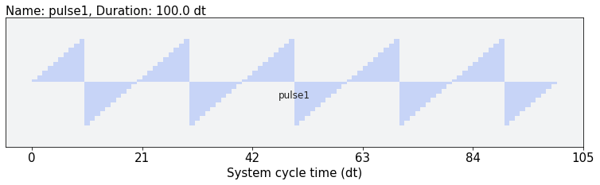

SymbolicPulse¶
- class SymbolicPulse(pulse_type, duration, parameters=None, name=None, limit_amplitude=None, envelope=None, constraints=None, valid_amp_conditions=None)[source]¶
Bases:
PulseThe pulse representation model with parameters and symbolic expressions.
A symbolic pulse instance can be defined with an envelope and parameter constraints. Envelope and parameter constraints should be provided as symbolic expressions. Rather than creating a subclass, different pulse shapes can be distinguished by the instance attributes
SymbolicPulse.envelopeandSymbolicPulse.pulse_type.The symbolic expressions must be defined either with SymPy or Symengine. Usually Symengine-based expression is much more performant for instantiation of the
SymbolicPulse, however, it doesn't support every functions available in SymPy. You may need to choose proper library depending on how you define your pulses. Symengine works in the most envelopes and constraints, and thus it is recommended to use this library especially when your program contains a lot of pulses. Also note that Symengine has the limited platform support and may not be available for your local system. Symengine is a required dependency for Qiskit on platforms that support it will always be installed along with Qiskit on macOSx86_64andarm64, and Linuxx86_64,aarch64, andppc64le. For 64-bit Windows users they will need to manual install it. For 32-bit platforms such asi686andarmv7Linux, and on Linuxs390xthere are no pre-compiled packages available and to use symengine you'll need to compile it from source. If Symengine is not available in your environment SymPy will be used.Envelope function
The waveform at time \(t\) is generated by the
get_waveform()according to\[F(t, \Theta) = \times F(t, {\rm duration}, \overline{\rm params})\]where \(\Theta\) is the set of full pulse parameters in the
SymbolicPulse.parametersdictionary which must include the \(\rm duration\). Note that the \(F\) is an envelope of the waveform, and a programmer must provide this as a symbolic expression. \(\overline{\rm params}\) can be arbitrary complex values as long as they passvalidate_parameters()and your quantum backend can accept. The time \(t\) and \(\rm duration\) are in units of dt, i.e. sample time resolution, and this function is sampled with a discrete time vector in \([0, {\rm duration}]\) sampling the pulse envelope at every 0.5 dt (middle sampling strategy) when theSymbolicPulse.get_waveform()method is called. The sample data is not generated until this method is called thus a symbolic pulse instance only stores parameter values and waveform shape, which greatly reduces memory footprint during the program generation.Constraint functions
Constraints on the parameters are defined with an instance attribute
SymbolicPulse.constraintswhich can be provided through the constructor. The constraints value must be a symbolic expression, which is a function of parameters to be validated and must return a boolean value beingTruewhen parameters are valid. If there are multiple conditions to be evaluated, these conditions can be concatenated with logical expressions such asAndandOrin SymPy or Symengine. The symbolic pulse instance can be played only when the constraint function returnsTrue. The constraint is evaluated whenvalidate_parameters()is called.Maximum amplitude validation
When you play a pulse in a quantum backend, you might face the restriction on the power that your waveform generator can handle. Usually, the pulse amplitude is normalized by this maximum power, namely \(\max |F| \leq 1\). This condition is evaluated along with above constraints when you set
limit_amplitude = Truein the constructor. To evaluate maximum amplitude of the waveform, we need to callget_waveform(). However, this introduces a significant overhead in the validation, and this cannot be ignored when you repeatedly instantiate symbolic pulse instances.SymbolicPulse.valid_amp_conditionsprovides a condition to skip this waveform validation, and the waveform is not generated as long as this condition returnsTrue, so that healthy symbolic pulses are created very quick. For example, for a simple pulse shape likeamp * cos(f * t), we know that pulse amplitude is valid as long asampremains less than magnitude 1.0. Soabs(amp) <= 1could be passed asSymbolicPulse.valid_amp_conditionsto skip doing a full waveform evaluation for amplitude validation. This expression is provided through the constructor. If this is not provided, the waveform is generated everytime whenvalidate_parameters()is called.Examples
This is how a user can instantiate a symbolic pulse instance. In this example, we instantiate a custom Sawtooth envelope.
from qiskit.pulse.library import SymbolicPulse my_pulse = SymbolicPulse( pulse_type="Sawtooth", duration=100, parameters={"amp": 0.1, "freq": 0.05}, name="pulse1", )
Note that
SymbolicPulsecan be instantiated without providing the envelope and constraints. However, this instance cannot generate waveforms without knowing the envelope definition. Now you need to provide the envelope.import sympy t, amp, freq = sympy.symbols("t, amp, freq") envelope = 2 * amp * (freq * t - sympy.floor(1 / 2 + freq * t)) my_pulse = SymbolicPulse( pulse_type="Sawtooth", duration=100, parameters={"amp": 0.1, "freq": 0.05}, envelope=envelope, name="pulse1", ) my_pulse.draw()
Likewise, you can define
SymbolicPulse.constraintsformy_pulse. After providing the envelope definition, you can generate the waveform data. Note that it would be convenient to define a factory function that automatically accomplishes this procedure.def Sawtooth(duration, amp, freq, name): t, amp, freq = sympy.symbols("t, amp, freq") instance = SymbolicPulse( pulse_type="Sawtooth", duration=duration, parameters={"amp": amp, "freq": freq}, envelope=2 * amp * (freq * t - sympy.floor(1 / 2 + freq * t)), name=name, ) return instance
You can also provide a
Parameterobject in theparametersdictionary, or definedurationwith aParameterobject when you instantiate the symbolic pulse instance. A waveform cannot be generated until you assign all unbounded parameters. Note that parameters will be assigned through the schedule playing the pulse.Serialization
The
SymbolicPulsesubclass can be serialized along with the symbolic expressions throughqiskit.qpy. A user can therefore create a custom pulse subclass with a novel envelope and constraints, and then one can instantiate the class with certain parameters to run on a backend. This pulse instance can be saved in the QPY binary, which can be loaded afterwards even within the environment not having original class definition loaded. This mechanism also allows us to easily share a pulse program including custom pulse instructions with collaborators.Note
Currently QPY serialization of
SymbolicPulseis not available. This feature will be implemented shortly.Create a parametric pulse.
- Parameters
pulse_type (
str) -- Display name of this pulse shape.duration (
Union[ParameterExpression,int]) -- Duration of pulse.parameters (
Optional[Dict[str,Union[ParameterExpression,complex]]]) -- Dictionary of pulse parameters that defines the pulse envelope.name (
Optional[str]) -- Display name for this particular pulse envelope.limit_amplitude (
Optional[bool]) -- IfTrue, then limit the absolute value of the amplitude of the waveform to 1. The default isTrueand the amplitude is constrained to 1.envelope (
Optional[Expr]) -- Pulse envelope expression.constraints (
Optional[Expr]) -- Pulse parameter constraint expression.valid_amp_conditions (
Optional[Expr]) -- Extra conditions to skip a full-waveform check for the amplitude limit. If this condition is not met, then the validation routine will investigate the full-waveform and raise an error when the amplitude norm of any data point exceeds 1.0. If not provided, the validation always creates a full-waveform.
- Raises
PulseError -- When not all parameters are listed in the attribute
PARAM_DEF.
Methods
Plot the interpolated envelope of pulse.
Return a Waveform with samples filled according to the formula that the pulse represents and the parameter values it contains.
Return True iff the instruction is parameterized.
Validate parameters.
Attributes
- constraints¶
Return symbolic expression for the pulse parameter constraints.
- Return type
Expr
- duration¶
- envelope¶
Return symbolic expression for the pulse envelope.
- Return type
Expr
- id¶
Unique identifier for this pulse.
- Return type
int
- limit_amplitude = True¶
- name¶
- parameters¶
- Return type
Dict[str,Any]
- pulse_type¶
Return display name of the pulse shape.
- Return type
str
- valid_amp_conditions¶
Return symbolic expression for the pulse amplitude constraints.
- Return type
Expr